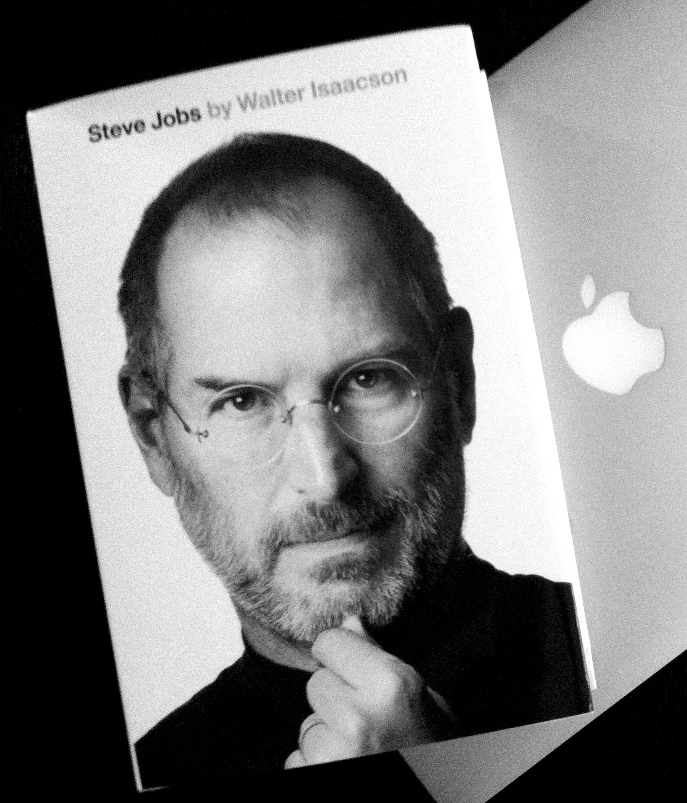

After many years in manufacturing, I wanted to meak a change so I joined in Le Wagon. Now I am a Full Stack Developer.
See for yourself|  |
Steve Jobsby Walter IsaacsonA riveting story of the roller-coaster life and searingly intense personality of a creative entrepreneur whose passion for perfection and ferocious drive revolutionized six industries: personal computers, animated movies, music, phones, tablet computing, and digital publishing. |
1984by George OrwellWritten in 1948, 1984 was George Orwell’s chilling prophecy about the future. And while 1984 has come and gone, his dystopian vision of a government that will do anything to control the narrative is timelier than ever... “The Party told you to reject the evidence of your eyes and ears. It was their final, most essential command.” |